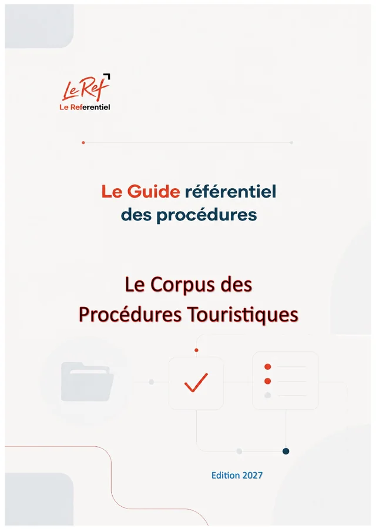

Maroc · TOUR · Édition 2026
Le guide pratique de l'opérateur touristique
Le Corpus des Procédures Touristiques
Procédures, processus et obligations des opérateurs du tourisme : établissements d'hébergement et restaurants touristiques, résidences immobilières de promotion touristique, agences de voyages, guides et transport touristique.
- 102paragraphes
- 39chapitres
- 2parties
- 41fichiers JSON
- 72pages (PDF)
Disponible prochainement (option d'achat)
Pages préliminaires et annexes
Contenu
102 paragraphes · 39 chapitres · un fichier JSON par chapitrePartie 1Le droit des activités touristiques
100 paragraphes
1.5 Le cycle de vie d'un projet d'hébergement touristique
- 1-040Le cycle de vie d'un projet d'hébergement touristique — présentation
- 1-041Phase 1 : conception et construction
- 1-042Phase 2 : classement provisoire et autorisation d'exploitation
- 1-043Phase 3 : ouverture et classement d'exploitation
- 1-044Phase 4 : vie du classement — contrôle, reclassement, radiation
- 1-045L'opposabilité du classement aux tiers